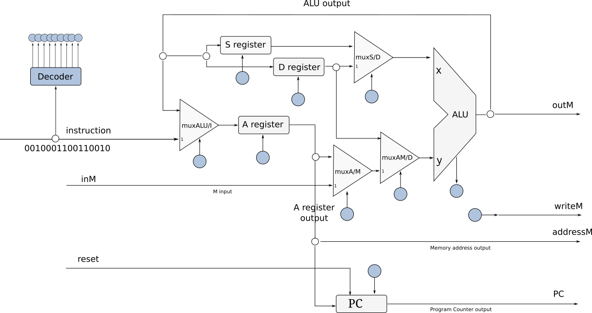
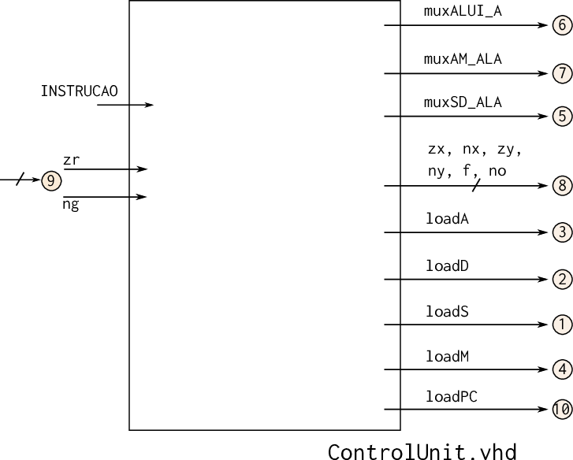

G - CPU¶

Nesse projeto cada grupo terá que implementar diversos codigos em assembly a fim de entendermos a linguagem e as limitações do hardware propostos.
Instruções¶
Seguir as intruções a seguir para desenvolvimento do projeto.
Entendendo a Organização do Projeto¶
A pasta do projeto G no repositório Z01, possui a seguinte estrutura:
G-Computador/
testeHW.py
testeAssemblyMyCPU.py
Z01SimuladorMyCPU.py
generateMySOF.py
programMySOF.py
programNASM.py
Quartus/
...
Z01-Simulator-RTL/
...
testeHW.py: Testa ocontrolUnit.vhdememoryIO.vhdtesteAssemblyMyCPU.py: Testa todo o HW do computador (CPU.vhd)Z01SimuladorMyCPU.py: Abre o simulador gráfico do Z01.1 com o HW do grupoprogramMySOF.py: Programa a FPGA com o HW do grupoprogramNASM.PY: Programa a ROM do Z01.1 da FPGA com um nasm passadoZ01-Simulator-RTL: Pasta com o simulador do computador (usa o hardware criado por vocês)
Testando HW (ControlUnit e MemoryIO)¶
Abra o terminal na pasta G-CPU e execute o script python localizado nessa pasta:
$ ./testeHW.py
Warning
Esse script testa apenas uma pequena parte do Control Uniy e do MemoryIO!
Passar nesse teste não indica 100% que o projeto está correto.
É possível testar apenas o controlUnit ou MemoryIO, execute o comando com: lib.tb_controlunit.all ou lib.tb_memoryio.all para testar apenas um módulo.
$ ./testeHW.py lib.tb_memoryio.all $ ./testeHW.py lib.tb_controlunit.all
Testando o projeto completo¶
Para testar se o computador está correto, iremos executar alguns programas realizados na etapa F-Assembly porém agora no Harware que vocês montaram. Para isso execute.
$ ./testeAssemblyMyCPU.py
Esse script irá compilar todos os módulos (desde o projeto C) e executar o top level Computador.vhd, iremos comparar se a resposta (memória RAM) possui o resultado esperado. Como os programas são complexos, esperamos com isso conseguir testar a totalidade do projeto.
Travis¶
Adicione ao Travis os dois testes, separando o memoryIO e o controlUnit:
testeHW.py lib.tb_memoryio.alltesteHW.py lib.tb_controlunit.alltesteAssemblyMyCPU.py
Projeto¶
Deve-se implementar o Control Unit e integrar os módulos: MemoryIO e CPU. O HDL que descreve o Computador já foi fornecido pronto.
Módulos¶
Note
Esses arquivos estão localizados em G-Computador/src/rtl/
Os módulos estão listados de maneira Top - Down
- Computador (já está pronto!)
- Arquivo:
computador.vhd - Descrição: TopLevel do projeto, entidade que integra a memória ROM o MemoryIO, CPU e PLL
- Dependências:
Dispositivos/ROM/ROM32K.vhd: ROM a ser utilizada no projeto (já foi dado pronto)Dispositivos/PLL/PLL.vhd: PLL a ser utilizada no projeto (já foi dado pronto)
- Arquivo:
- MemoryIO
- Arquivo :
MemoryIO.vhd - Descrição : Faz o mapa de memória para a CPU.
- Dependências :
Dispositivos/RAM/RAM16K.vhd: RAM a ser utilizada no projeto (já foi dado pronto)Dispositivos/Screen/Screen.vhd: Controlador do LCD a ser utilizada no projeto (já foi dado pronto)
- Arquivo :
- CPU
- Arquivo :
CPU.vhd - Descrição : CPU do Z01 integra registradores, controlUnit, ULA e PC.
- Dependências :
ControlUnit.vhd: Unidade de controle a ser implementadaULA.vhd: Unidade lógica desenvolvida no projeto DPC.vhd: Program counter do projeto Eregister16.vhd,mux16.vhd: Componentes do projeto C e D
- Arquivo :
- ControlUnit
- Arquivo :
ControlUnit.vhd - Descrição : Unidade de controle da CPU do Z01.
- Dependências :
- não há
- Arquivo :
Diagramas¶



ControlUnit

Rubricas para avaliação de projetos¶
Cada integrante do grupo irá receber duas notas: uma referente ao desenvolvimento total do projeto (Projeto) e outra referente a sua participação individual no grupo (que depende do seu papel).
Projeto¶
| Conceito | |
|---|---|
| I | - Menos da metade dos módulos funcionando |
| D | - Ao menos um módulo não está feito e não passa no testes. |
| C | - Construiu com os módulos do grupo o seu próprio computador |
| - Todos os módulos sendo testados no Travis. | |
| - Todos os módulos passam nos testes. | |
| - Executa o escreve a letra do grupo no LCD usando o seu computador | |
| B | - Adiciona um novo registrador a CPU |
| - Adiciona os displays de Sete Segmentos aos periféricos do Computador (memoryIO) | |
| - Faz um código e um vídeo que demonstra que ambos estão funcionando | |
| A | - Possibilita realizar carregamento efetivo em %D (leaw $5, %D) OU |
| - Adiciona um teclado (externo) como um novo periférico | |
| - Faz um código e um vídeo que demonstrando seu funcionamento |
Conceito A
Para o conceito A é necessário realizar apenas um item da lista.